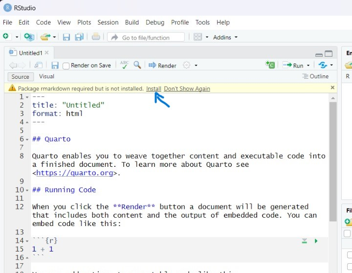
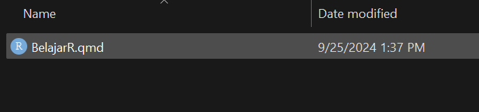
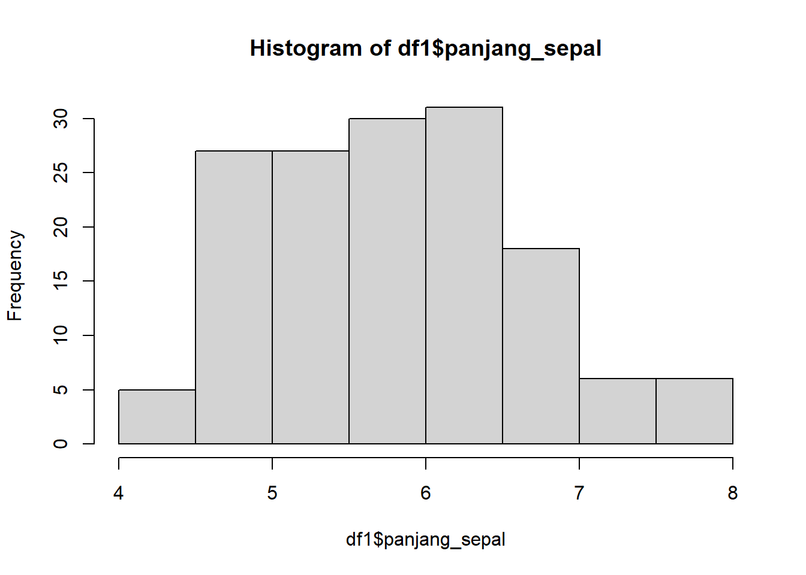
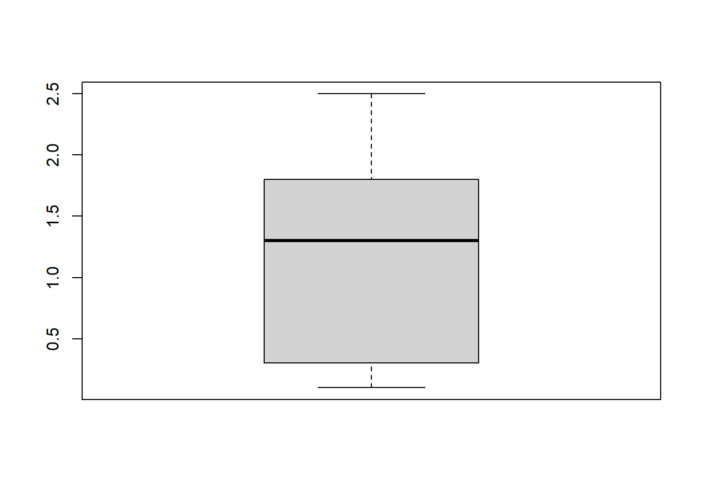
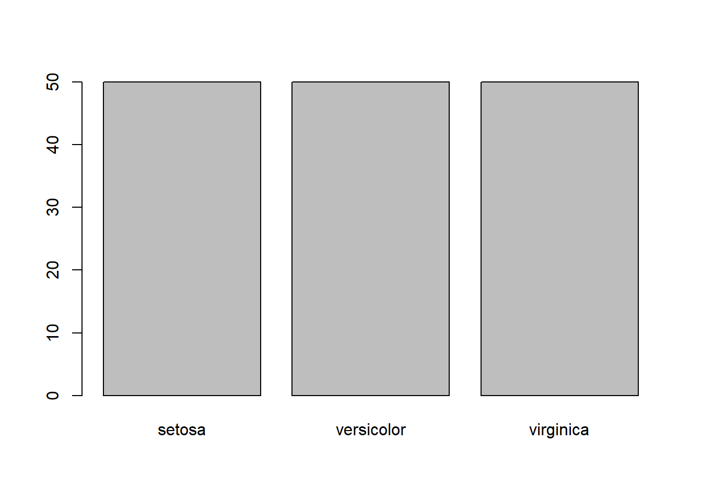
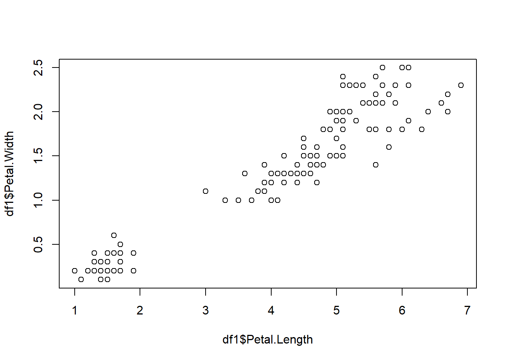
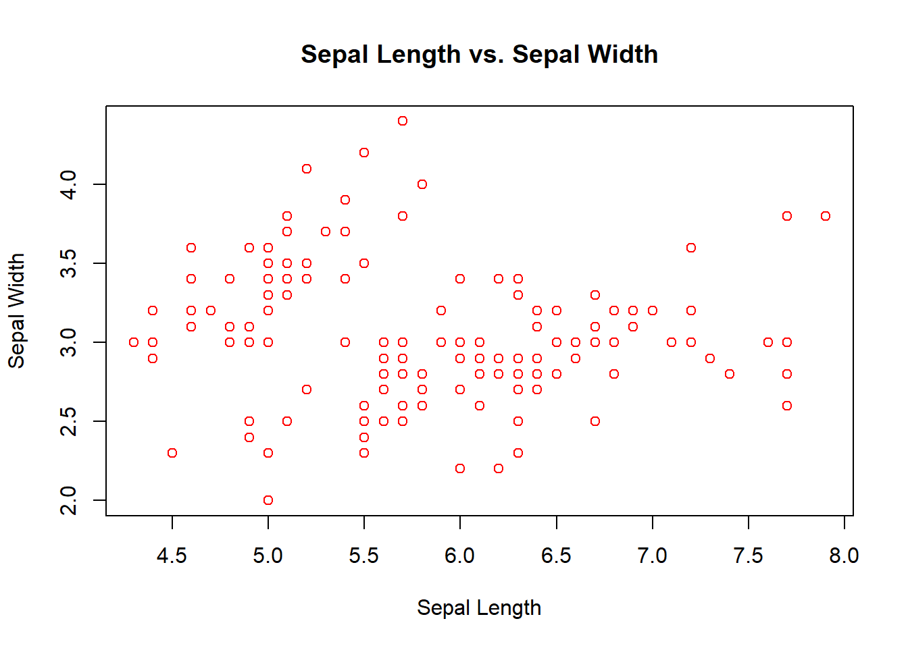
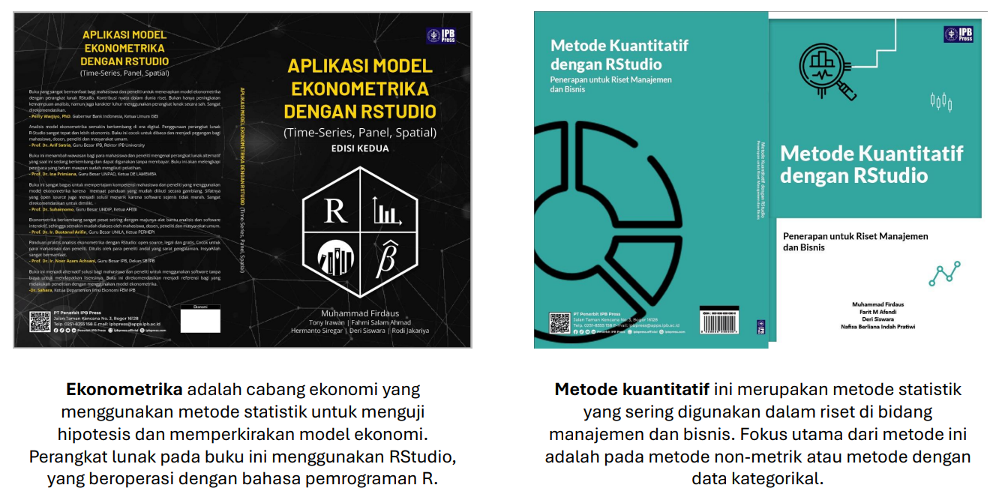

2 + 2 [1] 4Modul ini akan membahas pengenalan, cara install, dan dasar-dasar penggunaan R dan RStudio untuk analisis data.
Definisi
R adalah bahasa pemrograman yang digunakan untuk mengolah data dan melakukan analisis statistik. Dengan R, kita bisa menghitung, menganalisis, dan membuat grafik dari data yang kita miliki. RStudio adalah perangkat lunak yang membantu kita menggunakan R dengan lebih mudah. Ini adalah tempat di mana kita bisa menulis, menjalankan, dan melihat hasil kode R dengan cara yang sederhana dan teratur. R dan RStudio bersifat open-source atau gratis, tidak memerlukan lisensi penggunaan.
Cara Install
Unduh R dan RStudio melalui link di bawah ini :
Link : https://posit.co/download/rstudio-desktop/

Klik download… pada link di atas untuk mengunduh R dan RStudio
Langkah untuk mengunduh R dan RStudio untuk laptop OS windows (OS lainnya dapat memilih menyesuaikan).
Download R for Windows -> install R for the first time -> Download R-4.4…


Klik download pada website posit sebelumnya dan secara otomatis pada terunduh.
Aplikasi R dan RStudio yang sudah terunduh akan terlihat seperti pada gambar di bawah ini :

Install kedua aplikasi tersebut seperti menginstall aplikasi pada umumnya.

R dan RStudio yang sudah berhasil terinstall akan tercantum pada list aplikasi di PC/ Laptop. Pengguna cukup membuka aplikasi RStudio untuk melakukan pekerjaan seperti analisis data.
Tampilan antarmuka pertama aplikasi RStudio akan terlihat seperti ini.

Ada berbagai cara menjalankan R di RStudio, misalnya menggunakan media console, R script, dan terbaru adalah Quarto Document. Pelatihan ini akan berfokus pada Quarto Document, dengan kelebihan antarmuka yang paling user-friendly.
Langkah-langkah memulai lembar kerja Quarto :
 Kemudian pilih Quarto Document
Kemudian pilih Quarto Document

Klik Install

Tampilan akhir Quarto Document yang siap digunakan adalah sebagai berikut :

Keterangan :
Bagian di atas disebut sebagai YAML Header. Ini adalah bagian dari dokumen Quarto yang menyediakan metadata dokumen. Informasi ini digunakan untuk mengendalikan bagaimana dokumen dirender. Namun, pada pelatihan ini tidak akan dibahas mengenai render dan publikasi menggunakan quarto dokumen.

Quarto pada dasarnya adalah dokumen yang menggabungkan teks naratif dan kode yang dapat dijalankan untuk menghasilkan dokumen akhir yang diformat dengan baik. Bagian di atas adalah bagian teks, untuk menuliskan catatan dan outline. Tanda ## adalah fungsi header. # heading 1, ## heading 2, ### heading 3, dan seterusnya.

Terkahir, bagian di atas merupakan yang paling utama, yaitu disebut chunk kode R dalam dokumen Quarto. Sebuah chunk adalah bagian dari kode yang dapat dijalankan dalam dokumen.

Klik icon  di bagian kanan atas chunk untuk menjalankan kode sehingga output di bawah akan muncul seperti pada gambar. kita bisa membuat chunk baru secara manual ditulis atau alternatif lainnya dengan cara klik icon
di bagian kanan atas chunk untuk menjalankan kode sehingga output di bawah akan muncul seperti pada gambar. kita bisa membuat chunk baru secara manual ditulis atau alternatif lainnya dengan cara klik icon  di bagian kanan atas RStudio.
di bagian kanan atas RStudio.
Menyimpan Lembar Kerja
Melalui file -> Save atau Ctrl + S

File akan tersimpan dengan ekstensi .qmd. File ini dapat dibuka kembali di RStudio dengan cara membuka file -> Open File atau seperti membuka file pada umumnya.

Pada bagian ini, kita akan belajar bahasa R dan praktik pada RStudio menggunakan Quarto Document. Perlu diingat kembali, tuliskan atau ketikkan serta jalankan semua kode pada chunk. Kode pada modul ini terdapat pada blocktext yang berwarna abu-abu dan diikuti dengan output-nya. Selamat mencoba.
2 + 2 [1] 42 * 2 [1] 4Operator Aritmatika dalam R
+ : Penjumlahan- : Pengurangan* : Perkalian/ : Pembagian^ atau ** : Perpangkatan%% : Modulus (Sisa hasil bagi)%/% : Pembagian bulat2 * 2 # Contoh Perkalian[1] 4Di atas adalah contoh (#) sebagai komentar, artinya teks yang mengikuti tanda pagar tidak akan dieksekusi sebagai kode.
# 2 - 2 , Kode ini tidak bisa dieksekusi (run) atau tidak memiliki arti apapun.Sementara itu, simbol # di luar chunk adalah fungsi header. # heading 1, ## heading 2, ### heading 3, dan seterusnya. Berfungsi untuk membuat outline dokumen yang memudahkan mengakses seluruh bagian pada lembar kerja

Terdapat 3 (tiga) cara deklarasi variabel dalam R, yaitu dengan simbol <-, =, dan ->.
Simbol <- adalah simbol yang paling sering digunakan dalam R.
Contoh :
A <- 2 Mengeluarkan (print) output dari variabel A
print(A)[1] 2Atau bisa juga dengan cara sederhana
A[1] 2Cara lain deklarasi variabel
3 -> A
A[1] 3Atau
A = 4
A[1] 4Nilai varibel non-numerik harus diapit oleh tanda kutip
B <- "Halo Semua"
B[1] "Halo Semua"A <- 2
A[1] 2a <- 3
A[1] 2R tidak sensitif terhadap spasi, artinya spasi tidak dianggap sebagai karakter khusus kecuali jika digunakan di dalam fungsi atau nama variabel. Sebagai contoh, spasi tidak boleh digunakan dalam penamaan fungsi seperti c() atau nama variabel seperti regresi1, tidak boleh regresi 1, sebagai alternatif regresi_1
Deklarasi variabel dengan nama yang sama akan menggantikan nilai variabel sebelumnya.
A_1<-2
A_1[1] 2A_1 <- 3
A_1[1] 3# Ini contoh nama variabel yang salah : 1A <- 2# Ini contoh nama variabel yang benar
A1 <- 2
A1[1] 2x <- 5
y <- 3x > y # Lebih besar [1] TRUEx < y # Lebih kecil [1] FALSEx == y # Sama dengan [1] FALSEx >= y # Lebih besar sama dengan [1] TRUEx <= y # Lebih kecil sama dengan [1] FALSESecara linguistik, penggunaan istilah “variabel” dan “objek” sangat relatif dan bergantung pada konteks. Misalnya, dalam ekonometrika, “variabel” sering merujuk pada variabel dependen dan independen, sedangkan dalam pemrograman, “variabel” lebih sering merujuk pada objek. Dalam konteks ini, tidak perlu memperdebatkan istilah tersebut, yang penting adalah memahami bahwa variabel atau objek adalah tempat penyimpanan data. Data tersebut dapat berupa angka, karakter, vektor, matriks, data frame, dan lain sebagainya.

Sumber : http://venus.ifca.unican.es/Rintro/dataStruct.html
Vector: Struktur data satu dimensi yang digunakan untuk menyimpan kumpulan data. Semua elemen di dalam vektor harus memiliki tipe data yang sama.
Matrix: Struktur data dua dimensi yang digunakan untuk menyimpan kumpulan. Matriks terdiri dari baris dan kolom, dan setiap elemen di dalam matriks diakses menggunakan dua indeks bilangan bulat. Matriks adalah perpanjangan dari vektor ke dalam dua dimensi.
Array: Struktur data multi-dimensi (lebih dari dua dimensi) yang digunakan untuk menyimpan data. Array adalah generalisasi dari matriks ke dalam dimensi yang lebih tinggi. Sebagai contoh, array tiga dimensi dapat dianggap sebagai kumpulan dari beberapa matriks.
Data Frame: Generalisasi dari matriks, di mana setiap kolom dapat menyimpan tipe data yang berbeda. Data frame sering digunakan untuk menyimpan data tabular di R, dengan kolom yang bisa berupa tipe data yang berbeda (misalnya, kolom pertama numerik dan kolom kedua karakter).
List: Kumpulan objek yang berurutan di mana elemen-elemen tersebut bisa memiliki tipe data yang berbeda. Berbeda dengan vektor atau matriks, list dapat menyimpan berbagai tipe data di dalamnya, seperti numerik, karakter, vector, dll.
Fungsi yang paling sering digunakan untuk membuat sebuah vector adalah dengan menggunakan fungsi c(). Fungsi c() adalah singkatan dari combine atau concatenate. Fungsi adalah kumpulan perintah yang diberi nama dan dapat digunakan kembali. Contoh lain fungsi misalnya sum() untuk menjumlahkan, mean() untuk menghitung rata-rata, sd() untuk menghitung standar deviasi, dan lain sebagainya.
a1 <- c(2,4,7,3) # Numeric vector
a2 <- c("one","two","three") # Character vectorPemanggilan elemen vector
a1 # Mengeluarkan vector a1[1] 2 4 7 3a2[c(1,3)] # Mengeluarkan elemen pertama dan ketiga dari vector a2[1] "one" "three"a1[-1] # Mengeluarkan elemen pertama dari vector a1 [1] 4 7 3a1[2:4] # Mengeluarkan elemen kedua sampai keempat dari vector a1 [1] 4 7 3Operasi aritmatika pada vector
a <- c(1, 2, 3)
b <- c(4, 5, 6)
d <- a + b
d [1] 5 7 9e <- a - b
e[1] -3 -3 -3Cara lain membuat vector
a3 <- 1:10 # 1 sampai 10
a3 [1] 1 2 3 4 5 6 7 8 9 10a4 <- seq(1, 10, by = 2) # 1 sampai 10 dengan interval 2
a4[1] 1 3 5 7 9by adalah contoh argumen dalam fungsi. Argumen adalah option pada fungsi untuk melakukan sesuatu. Dalam hal ini, argumen by digunakan untuk menentukan interval antara dua angka dalam vektor.
a5 <- rep(1, 10) # 1 sebanyak 10 kali
a5 [1] 1 1 1 1 1 1 1 1 1 1# Letters
a6 <- LETTERS[1:5]
a6[1] "A" "B" "C" "D" "E"Matriks dapat dibuat dengan menggunakan fungsi matrix(). Fungsi ini memiliki beberapa argumen, di antaranya adalah vektor yang akan diubah menjadi matriks, jumlah baris, dan jumlah kolom. Jika jumlah baris atau kolom tidak ditentukan, maka fungsi matrix() akan mengisi baris atau kolom secara otomatis.
a4 <- 1:4
b1 <- matrix(a4, nrow = 2, ncol = 2)
b1 [,1] [,2]
[1,] 1 3
[2,] 2 4b2 <- matrix(1:12,3,4)
b3 <- matrix(a4,3,4,byrow=TRUE)
b4 <- matrix(1:14,4,4)Warning in matrix(1:14, 4, 4): data length [14] is not a sub-multiple or
multiple of the number of rows [4]b2 [,1] [,2] [,3] [,4]
[1,] 1 4 7 10
[2,] 2 5 8 11
[3,] 3 6 9 12b3 [,1] [,2] [,3] [,4]
[1,] 1 2 3 4
[2,] 1 2 3 4
[3,] 1 2 3 4b4 [,1] [,2] [,3] [,4]
[1,] 1 5 9 13
[2,] 2 6 10 14
[3,] 3 7 11 1
[4,] 4 8 12 2b2[2,3] # Mengeluarkan elemen baris kedua dan kolom ketiga dari matriks b2 [1] 8b2[1:2,] # Mengeluarkan baris pertama dan kedua dari matriks b2 [,1] [,2] [,3] [,4]
[1,] 1 4 7 10
[2,] 2 5 8 11b2[c(1,3),-2] # Mengeluarkan baris pertama dan ketiga, dan kolom pertama dan ketiga dari matriks b2 [,1] [,2] [,3]
[1,] 1 7 10
[2,] 3 9 12Operasi matriks
m1 <- matrix(c(1, 2, 3, 4, 5, 6), nrow = 2, ncol = 3)
m2 <- matrix(c(7, 8, 9, 10, 11, 12), nrow = 2, ncol = 3)
m3 <- m1 + m2
m3 [,1] [,2] [,3]
[1,] 8 12 16
[2,] 10 14 18m4 <- m1 %*% t(m2)
m4 [,1] [,2]
[1,] 89 98
[2,] 116 128a5 <- c("A","B","AB","O")
d1 <- factor(a5)
levels(d1)[1] "A" "AB" "B" "O" levels(d1) <- c("Darah A","Darah AB","Darah B","Darah O")
d1[1] Darah A Darah B Darah AB Darah O
Levels: Darah A Darah AB Darah B Darah Oa6 <- c("SMA","SD","SMP","SMA","SMA","SMA","SMA","SMA","SMA","SMA","SMA","SMA","SMA")
d5 <- factor(a6, levels=c("SD","SMP","SMA"))
levels(d5) [1] "SD" "SMP" "SMA"d5 [1] SMA SD SMP SMA SMA SMA SMA SMA SMA SMA SMA SMA SMA
Levels: SD SMP SMAa1; b2; d1[1] 2 4 7 3 [,1] [,2] [,3] [,4]
[1,] 1 4 7 10
[2,] 2 5 8 11
[3,] 3 6 9 12[1] Darah A Darah B Darah AB Darah O
Levels: Darah A Darah AB Darah B Darah Oe1 <- list(a1,b2,d1)
e2 <- list(vect=a1,mat=b2,fac=d1)
e1[[1]]
[1] 2 4 7 3
[[2]]
[,1] [,2] [,3] [,4]
[1,] 1 4 7 10
[2,] 2 5 8 11
[3,] 3 6 9 12
[[3]]
[1] Darah A Darah B Darah AB Darah O
Levels: Darah A Darah AB Darah B Darah Oe2$vect
[1] 2 4 7 3
$mat
[,1] [,2] [,3] [,4]
[1,] 1 4 7 10
[2,] 2 5 8 11
[3,] 3 6 9 12
$fac
[1] Darah A Darah B Darah AB Darah O
Levels: Darah A Darah AB Darah B Darah Oe1[[1]][2] # Mengeluarkan elemen kedua dari list e1 [1] 4e2$fac # Mengeluarkan elemen fac dari list e2[1] Darah A Darah B Darah AB Darah O
Levels: Darah A Darah AB Darah B Darah Oe2[2] # Mengeluarkan elemen kedua dari list e2$mat
[,1] [,2] [,3] [,4]
[1,] 1 4 7 10
[2,] 2 5 8 11
[3,] 3 6 9 12names(e2) # Mengeluarkan nama elemen dari list e2[1] "vect" "mat" "fac" Angka <- 11:15
Huruf <- factor(LETTERS[6:10])
f1 <- data.frame(Angka,Huruf)
f1 Angka Huruf
1 11 F
2 12 G
3 13 H
4 14 I
5 15 Jf1[1,2] # Mengeluarkan elemen baris pertama dan kolom kedua dari data frame f1 [1] F
Levels: F G H I Jf1$Angka # Mengeluarkan elemen atau kita sebut variabel Angka dari data frame f1[1] 11 12 13 14 15f1[,"Huruf"] # Mengeluarkan elemen atau kita sebut variabel Huruf dari data frame f1[1] F G H I J
Levels: F G H I Jcolnames(f1) # Mengeluarkan nama kolom dari data frame f1 [1] "Angka" "Huruf"str(f1)'data.frame': 5 obs. of 2 variables:
$ Angka: int 11 12 13 14 15
$ Huruf: Factor w/ 5 levels "F","G","H","I",..: 1 2 3 4 5int): Menyimpan bilangan bulat.1, 2, 3chr): Menyimpan teks atau string."A", "Hello, world!", "1234"3.14, 42Package:
Paket dalam R adalah kumpulan fungsi, data, dan dokumentasi yang dikemas bersama untuk memudahkan pengguna dalam melakukan tugas.
# install.packages("readxl") - Kode untuk menginstall package readxl
# Hapus simbol (#) untuk menjalankan
library(readxl) # fungsi library() digunakan untuk memuat package yang terinstallreadxl adalah package yang digunakan untuk membaca file excel. Package ini memiliki fungsi read_excel()
#install.packages("dplyr")
library(dplyr)
Attaching package: 'dplyr'The following objects are masked from 'package:stats':
filter, lagThe following objects are masked from 'package:base':
intersect, setdiff, setequal, uniondplyr adalah package yang digunakan untuk memanipulasi data. Package ini memiliki fungsi-fungsi seperti select(), filter(), mutate(), summarise(), dan arrange().
Untuk mengetahui fungsi-fungsi yang ada di dalam package dplyr, kita dapat menggunakan fungsi help().
help(package = "dplyr")
Help di R untuk fungsi, misal untuk mengetahui cara penggunaan fungsi read_excel :
?read_excel
R dapat mengimpor data dari berbagai sumber, seperti file .xlsx, file .csv, file .txt, .dta (STATA), dan lain sebagainya.
Import data dari file excel :
library(readxl)
# read_excel("data/iris.xlsx")
data(iris) # Untuk latihan kita pakai data sample bawaan R
df1 <- iris
head(df1) Sepal.Length Sepal.Width Petal.Length Petal.Width Species
1 5.1 3.5 1.4 0.2 setosa
2 4.9 3.0 1.4 0.2 setosa
3 4.7 3.2 1.3 0.2 setosa
4 4.6 3.1 1.5 0.2 setosa
5 5.0 3.6 1.4 0.2 setosa
6 5.4 3.9 1.7 0.4 setosaread.csv() dari package utils (default atau bawaan di R).read_dta() dari package haven.dplyrmutate()Fungsi ini digunakan untuk menambahkan kolom baru ke data frame.
df2 <- mutate(df1, sepal2 = Sepal.Length + Sepal.Width)
head(df2) # Menampilkan 6 baris pertama dari data frame df2 Sepal.Length Sepal.Width Petal.Length Petal.Width Species sepal2
1 5.1 3.5 1.4 0.2 setosa 8.6
2 4.9 3.0 1.4 0.2 setosa 7.9
3 4.7 3.2 1.3 0.2 setosa 7.9
4 4.6 3.1 1.5 0.2 setosa 7.7
5 5.0 3.6 1.4 0.2 setosa 8.6
6 5.4 3.9 1.7 0.4 setosa 9.3filter()Fungsi ini digunakan untuk memfilter baris berdasarkan kondisi tertentu.
df1_setosa <- filter(df1, Species=="setosa")
head(df1_setosa) Sepal.Length Sepal.Width Petal.Length Petal.Width Species
1 5.1 3.5 1.4 0.2 setosa
2 4.9 3.0 1.4 0.2 setosa
3 4.7 3.2 1.3 0.2 setosa
4 4.6 3.1 1.5 0.2 setosa
5 5.0 3.6 1.4 0.2 setosa
6 5.4 3.9 1.7 0.4 setosadf1$Species <- as.factor(df1$Species)
levels(df1$Species)[1] "setosa" "versicolor" "virginica" df3 <- filter(df1, Species=="setosa"& Petal.Length==1.3)
head(df3) Sepal.Length Sepal.Width Petal.Length Petal.Width Species
1 4.7 3.2 1.3 0.2 setosa
2 5.4 3.9 1.3 0.4 setosa
3 5.5 3.5 1.3 0.2 setosa
4 4.4 3.0 1.3 0.2 setosa
5 5.0 3.5 1.3 0.3 setosa
6 4.5 2.3 1.3 0.3 setosadf3 <- filter(df1, Species=="setosa" | Petal.Length==1.3)
head(df3) Sepal.Length Sepal.Width Petal.Length Petal.Width Species
1 5.1 3.5 1.4 0.2 setosa
2 4.9 3.0 1.4 0.2 setosa
3 4.7 3.2 1.3 0.2 setosa
4 4.6 3.1 1.5 0.2 setosa
5 5.0 3.6 1.4 0.2 setosa
6 5.4 3.9 1.7 0.4 setosaselect()Fungsi ini digunakan untuk memilih kolom tertentu dari data frame.
df4 <- select(df1, Sepal.Length, Species)
head(df4) Sepal.Length Species
1 5.1 setosa
2 4.9 setosa
3 4.7 setosa
4 4.6 setosa
5 5.0 setosa
6 5.4 setosaarrange()Fungsi ini digunakan untuk mengurutkan baris berdasarkan kolom tertentu.
# mengurutkan data berdasarkan Petal.Width secara ascending
df5 <- arrange(df1, Petal.Width)
head(df5) Sepal.Length Sepal.Width Petal.Length Petal.Width Species
1 4.9 3.1 1.5 0.1 setosa
2 4.8 3.0 1.4 0.1 setosa
3 4.3 3.0 1.1 0.1 setosa
4 5.2 4.1 1.5 0.1 setosa
5 4.9 3.6 1.4 0.1 setosa
6 5.1 3.5 1.4 0.2 setosa# Mengurutkan data berdasarkan Species dan Petal.Width secara descending
df6 <- arrange(df1, Species, desc(Petal.Width))
head(df6) Sepal.Length Sepal.Width Petal.Length Petal.Width Species
1 5.0 3.5 1.6 0.6 setosa
2 5.1 3.3 1.7 0.5 setosa
3 5.4 3.9 1.7 0.4 setosa
4 5.7 4.4 1.5 0.4 setosa
5 5.4 3.9 1.3 0.4 setosa
6 5.1 3.7 1.5 0.4 setosarename()Fungsi ini digunakan untuk mengubah nama kolom.
df1 <- rename(df1, panjang_sepal = Sepal.Length)
head(df1) panjang_sepal Sepal.Width Petal.Length Petal.Width Species
1 5.1 3.5 1.4 0.2 setosa
2 4.9 3.0 1.4 0.2 setosa
3 4.7 3.2 1.3 0.2 setosa
4 4.6 3.1 1.5 0.2 setosa
5 5.0 3.6 1.4 0.2 setosa
6 5.4 3.9 1.7 0.4 setosa|> di dplyroperator pipe |> digunakan untuk memudahkan penulisan kode dalam dplyr untuk memanipulasi data dengan beberapa fungsi sekaligus.
df2 <- df1 |>
group_by(Species) |>
summarise(rata2_Sepal.Width = mean(Sepal.Width))
df2# A tibble: 3 × 2
Species rata2_Sepal.Width
<fct> <dbl>
1 setosa 3.43
2 versicolor 2.77
3 virginica 2.97Kode di atas akan menghitung rata-rata Sepal.Width berdasarkan Species dengan fungsi group_by() dan summarise().
df2 <- df1 %>%
filter(Species == "setosa") %>% # Filter spesies setosa
select(panjang_sepal, Sepal.Width) %>% # Pilih kolom Sepal.Length dan Sepal.Width
arrange(desc(panjang_sepal)) # Urutkan berdasarkan Sepal.Length secara menurun
head(df2) panjang_sepal Sepal.Width
1 5.8 4.0
2 5.7 4.4
3 5.7 3.8
4 5.5 4.2
5 5.5 3.5
6 5.4 3.9Kode di atas akan memfilter data yang hanya memiliki spesies setosa, memilih kolom Sepal.Length dan Sepal.Width, dan mengurutkan data berdasarkan Sepal.Length secara menurun.
hist(df1$panjang_sepal)
boxplot(df1$Petal.Width)
barplot(table(df1$Species))
pie(table(df1$Species))
plot(df1$Petal.Length, df1$Petal.Width)
plot(df1$panjang_sepal, df1$Sepal.Width,
main = "Sepal Length vs. Sepal Width",
xlab = "Sepal Length", ylab = "Sepal Width", col = "red")
Buatlah objek beri nama latihan1 yang memiliki input berupa angka 6 dan munculkan outputnya.
Buatlah objek beri nama latihan2 yang memiliki input karakter ’Halo Indonesia” dan munculkan outputnya.
Buatlah vektor beri nama provinsiyang berisi elemen “Aceh, DKI Jakarta, Sumatera Barat, Riau, Jawa Barat”
Buatlah vektor beri nama luas_wilayah yang berisi elemen 57682,72156, 42152, 87833, 50604
Buatlah factor beri nama pulau yang berisi elemen/data Jawa dan Sumatera (Sesuaikan dengan vektor provinsi)
Gabungkan menjadi tabel/data frame dari tiga objek di atas beri nama latihan3.
Tampilkan output dari tabel di atas
Tampilkan hanya variabel/kolom pulau
Gunakan data iris, buat peubah/variabel baru dengan nama sepal1001 yang merupakan data Sepal.Length dikali 100. Jadikan tabel atau data frame baru beri nama dflat1
Tampilkan 6 baris pertama
Filter data hanya spesies “setosa“ dan “virginica“. Buat jadi tabel baru beri nama dflat2
Tampilkan 6 baris terakhir
Buat Histogram dan Box Plot dari data iris, berikan argumen seperti memberi judul plot dan warna. Bebas, tidak ada ketentuan.

Pemesanan: https://bit.ly/buku-jurnal-rstudio2